에너지관리기사 (2016-05-08 기출문제)
1과목: 연소공학
1. 연소효율은 실제의 연소에 의한 열량을 완전연소 했을 때의 열량으로 나눈 것으로 정의할 때, 실제의 연소에 의한 열량을 계산하는 데 필요한 요소가 아닌 것은?
- 연소가스 유출 단면적
- 연소가스 밀도
- 연소가스 열량
- 연소가스 비열
(정답률: 54%)

2. 보일러의 흡인통풍(Induced Draft) 방식에 가장 많이 사용되는 송풍기의 형식은?
- 플레이트형
- 터보형
- 축류형
- 다익형
(정답률: 72%)
3. 중유의 점도가 높아질수록 연소에 미치는 영향에 대한 설명으로 틀린 것은?
- 오일탱크로부터 버너까지의 이송이 곤란해진다.
- 기름의 분무현상(automization)이 양호해진다.
- 버너 화구(火口)에 유리탄소가 생긴다.
- 버너의 연소상태가 나빠진다.
(정답률: 85%)
4. 탄소(C) 80%, 수소(H) 20%의 중유를 완전 연소시켰을 때 CO2 max[%]는?
- 13.2
- 17.2
- 19.1
- 21.1
(정답률: 29%)
5. 연소의 정의를 가장 옳게 나타낸 것은?
- 연료가 환원하면서 발열하는 현상
- 화학변화에서 산화로 인한 흡열 반응
- 물질의 산화로 에너지의 전부가 직접 빛으로 변하는 현상
- 온도가 높은 분위기 속에서 산소와 화합하여 빛과 열을 발생하는 현상
(정답률: 80%)
6. 보일러 등의 연소장치에서 질소산화물(NOx)의 생성을 억제할 수 있는 연소 방법이 아닌 것은?
- 2단 연소
- 저산소(저공기비)연소
- 배기의 재순환 연소
- 연소용 공기의 고온 예열
(정답률: 74%)
7. 가연성 혼합기의 폭발방지를 위한 방법으로 가장 거리가 먼 것은?
- 산소농도의 최소화
- 불활성 가스의 치환
- 불활성 가스의 첨가
- 이중용기 사용
(정답률: 70%)
8. 다음 기체연료 중 단위 체적당 고위발열량이 가장 높은 것은?
- LNG
- 수성가스
- LPG
- 유(油)가스
(정답률: 68%)
9. 이론습연소가스량 Gow와 이론건연소가스량 God의 관계를 나타낸 식으로 옳은? (단, H는 수소, w는 수분을 나타낸다.)
- God=Gow+1.25(9H+w)
- God=Gow-1.25(9H+w)
- God=Gow+(9H+w)
- God=Gow-(9H+w)
(정답률: 71%)
10. 연소가스 부피조성이 CO2 13%, O2 8%, N2 79%일 때 공기 과잉계수(공기비)는?
- 1.2
- 1.4
- 1.6
- 1.8
(정답률: 65%)
11. 액체연료의 대한 적합한 연소방법은?
- 화격자연소
- 스토커연소
- 버너연소
- 확산연소
(정답률: 75%)
12. 발열량이 5000kcal/kg인 고체연료를 연소할 때 불완전연소에 의한 열손실이 5%, 연소재에 의한 열손실이 5%이었다면 연소효율은?
- 80%
- 85%
- 90%
- 95%
(정답률: 66%)
13. NO2의 배출을 최소화할 수 있는 방법이 아닌 것은?
- 미연소분을 최소화 하도록 한다.
- 연료와 공기의 혼합을 양호하게 하여 연소온도를 낮춘다.
- 저온배출가스 일부를 연소용 공기에 혼입해서 연소용 공기 중의 산소농도를 저하시킨다.
- 버너 부근의 화염온도는 높이고 배기가스 온도는 낮춘다.
(정답률: 61%)
14. 열병합 발전소에서 배기가스를 사이클론에서 전처리하고 전기 집진장치에서 먼지를 제거하고 있다. 사이클론 입구, 전기집진기 입구와 출구에서의 먼지 농도가 각각 95, 10, 0.5g/Nm3일 때 종합집집율은?
- 85.7%
- 90.8%
- 95.0%
- 99.5%
(정답률: 55%)
15. 연소배기가스를 분석한 결과 O2의 측정치가 4%일 때 공기비(m)는?
- 1.10
- 1.24
- 1.30
- 1.34
(정답률: 73%)
16. 액체를 미립화 하기 위해 분무를 할 때 분무를 지배하는 요소로서 가장 거리가 먼 것은?
- 액류의 운동량
- 액류와 기체의 표면적에 따른 저항력
- 액류와 액공 사이의 마찰력
- 액체와 기체 사이의 표면장력
(정답률: 64%)
17. 가열실의 이론 효율(E1)을 옳게 나타낸 식은? (단, tr 이론연소온도, ti : 파열물의 온도이다.)
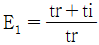
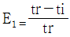
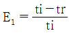
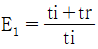
(정답률: 72%)
18. 산소 1Nm3을 연소에 이용하려면 필요한 공기량(Nm3)은?
- 1.9
- 2.8
- 3.7
- 4.8
(정답률: 56%)
19. 온도가 293K인 이상기체를 단열 압축하여 체적을 1/6로 하였을 때 가스의 온도는 약 몇 K인가? (단, 가스의 정적비열[Cv]은 0.7KJ/kgㆍK, 정압비열[Cp]은 0.98KJ/kgㆍK이다.)
- 398
- 493
- 558
- 600
(정답률: 46%)
20. 열효율 향상 대책이 아닌 것은?
- 과잉공기를 증가시킨다.
- 손실열을 가급적 적게 한다.
- 전열량이 증가되는 방법을 취한다.
- 장치의 최적 설계조건과 운전조건을 일치시킨다.
(정답률: 82%)
2과목: 열역학
21. 360℃와 25℃ 사이에서 작동하는 열기관의 최대 이론 열효율은 약 얼마인가?
- 0.450
- 0.529
- 0.635
- 0.735
(정답률: 66%)
22. 다음 중 냉동 사이클의 운전특성을 잘 나타내고, 사이클의 해석을 하는 데 가장 많이 사용되는 선도는?
- 온도-체적 선도
- 압력-엔탈피 선도
- 압력-체적 선도
- 압력-온도 선도
(정답률: 72%)
23. 터빈에서 2kg/s의 유량으로 수증기를 팽창시킬 때 터빈의 출력이 1200KW라면 열손실은 몇 KW인가? (단, 터빈 입구와 출구에서 수증기의 엔탈피는 각각 3200kJ/kg와 2500KJ/kg이다.
- 600
- 400
- 300
- 200
(정답률: 43%)
24. 엔탈피가 3140kJ/kg인 과열증기가 단열노즐에 저속상태로 들어와 출구에서 엔탈피가 3010KJ/kg인 상태로 나갈 때 출구에서의 증기 속도(m/s)는?
- 8
- 25
- 160
- 510
(정답률: 47%)
25. 엔트로피에 대한 설명으로 틀린 것은?
- 엔트로피는 상태함수이다.
- 엔트로피는 분자들의 무질서도 척도가 된다.
- 우주의 모든 현상은 총 엔트로피가 증가하는 방향으로 진행되고 있다.
- 자유팽창, 종류가 다른 가스의 혼합, 액체내의 분자의 확산 등의 과정에서 엔트로피가 변하지 않는다.
(정답률: 68%)
26. 포화증기를 가역 단열 압축시켰을 때의 설명으로 옳은 것은?
- 압력과 온도가 올라간다.
- 압력은 올라가고 온도는 떨어진다.
- 온도는 불변이며 압력은 올라간다.
- 압력과 온도 모두 변하지 않는다.
(정답률: 59%)
27. PVn=C에서 이상기체의 등온변화인 경우 폴리트로프 지수(n)는?
- ∞
- 1.4
- 1
- 0
(정답률: 72%)
28. 증기의 교축과정에 대한 설명으로 옳은 것은?
- 습증기 구역에서 포화온도가 일정한 과정
- 습증기 구역에서 포화압력이 일정한 과정
- 가역과정에서 엔트로피가 일정한 과정
- 엔탈피가 일정한 비가역 정상류 과정
(정답률: 61%)
29. 공기 50kg을 일정 압력하에서 100℃에서 700℃까지 가열할 때 엔탈피 변화는 얼마인가? (단, Cp=1.0KJ/kgㆍK, Cv=0.71KJ/kgㆍK)
- 600KJ
- 21,300KJ
- 30,000KJ
- 42,600KJ
(정답률: 53%)
30. 비열이 일정하고 비열비가 k인 이상기체의 등엔트로피 과정에서 성립하지 않는 것은? (단, T, P, v는 각각 절대온도, 압력, 비체적이다.)
- PVk=일정
- Tvk-1=일정
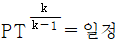
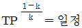
(정답률: 57%)
31. 그림은 공기 표준 Otto cycle이다. 효율 η에 관한 식으로 틀린 것은? (단, r은 압축비, k는 비열비이다.)
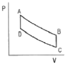
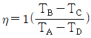
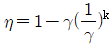
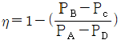
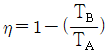
(정답률: 51%)
32. 냉동사이클의 T-s선도에서 냉매단위질량당 냉각열량 qL과 압축기의 소요동력 w를 옳게 나타낸 것은? (단, h는 엔탈피를 나타낸다.)
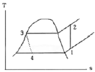
- qL=h3-h4, w=h2-h1
- qL=h1-h4, w=h2-h1
- qL=h2-h3, w=h1-h4
- qL=h3-h4, w=h1-h4
(정답률: 68%)
33. 압력이 P로 일정한 용기 내에 이상기체 1kg이 들어 있고, 이 이상가체를 외부에서 가열하였다. 이 때 전달된 열량은 Q이며, 온도가 T1에서 T2로 변화하였고, 기체의 부피가 V1에서 V2로 변하였다. 공기의 정압비열 Cp은 어떻게 계산되는가?
- Cp-Q/P
- CP=Q/(T2-T1)
- Cp=Q/(V2=V1)
- Cp=P×(V2-V1)/(T1-T2)
(정답률: 63%)
34. 온도 250℃, 잘량 50kg인 금속을 20℃의 물속에 놓았다. 최종 평형 상태에서의 온도가 30℃이면 물의 양은 약 몇 kg인가? (단, 열손실은 없으며, 금속의 비열은 0.5kJ/kgㆍK, 물의 비열은 4.18KJ/kgㆍK이다.)
- 108.3
- 131.6
- 167.7
- 182.3
(정답률: 58%)
35. ∫Fdx는 무엇을 나타내는가? (단, F는 힘, x는 변위를 나타낸다.)
- 일
- 열
- 운동에너지
- 엔트로피
(정답률: 71%)
36. 비열이 3KJ/kgㆍ℃인 액체 10kg을 20℃로부터 80℃까지 전열기로 가열시키는 데 필요한 소요전력량은 약 몇 kWh 인가? (단, 전열기의 효율은 88%이다.)
- 0.46
- 0.57
- 480
- 530
(정답률: 47%)
37. 저열원 10℃, 고열원 600℃ 사이에 작용하는 카르노사이클에서 사이클당 방열량이 3.5kJ이면 사이클당 실제 일의 양은 약 몇 KJ인가?
- 3.5
- 5.7
- 6.8
- 7.3
(정답률: 32%)
38. 직경 40cm의 피스톤이 800kPa의 압력에 대항하여 20cm 움직였을 때 한 일은 약 몇 KJ인가?
- 20.1
- 63.6
- 254
- 1350
(정답률: 41%)
39. 일정정압비열(Cp=1.0KJ/kgㆍK)을 가정하고, 공기 100kg을 400℃에서 120℃로 냉각할 때 엔탈피 변화는?
- -24000KJ
- -26000KJ
- -28000KJ
- -30000KJ
(정답률: 69%)
40. 냉동(refrigeration) 사이클에 대한 성능계수(COP)는 다음 중 어느 것을 해 준 일(work input)로 나누어 준 것인가?
- 저온측에서 방출된 열량
- 저온측에서 흡수한 열량
- 고온측에서 방출된 열량
- 고온측에서 흡수한 열량
(정답률: 51%)
3과목: 계측방법
41. 진공에 대한 폐관식 압력계로서 측정하려고 하는 기체를 압축하여 수은주로 읽게 하여 그 체적변화로부터 원래의 압력을 측정하는 형식의 진공계는?
- 눗슨(Knudsen)
- 피라니(Pirani)
- 맥로우드(Mcleod)
- 벨로우즈(Bellows)
(정답률: 62%)
42. 아래 열교환기에 대한 제어내용은 다음 중 어느 제어방법에 해당하는가?
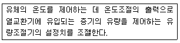
- 추종제어
- 프로그램제어
- 정치제어
- 캐스케이드제어
(정답률: 71%)
43. 저항식 습도계의 특징으로 틀린 것은?
- 저온도의 측정이 가능하다.
- 응답이 늦고 정도가 좋지 않다.
- 연속기록, 원격측정, 자동제어에 이용된다.
- 교류전압에 의하여 저항치를 측정하여 상대습도를 표시한다.
(정답률: 71%)
44. 화염검출방식으로 가장 거리가 먼 것은?
- 화염의 열을 이용
- 화염의 빛을 이용
- 화염의 전기전도성을 이용
- 화염의 색을 이용
(정답률: 70%)
45. 입구의 지름이 40cm, 벤츄리목의 지름이 20cm인 벤츄리미터기로 공기의 유량을 측정하여 물-공기시차액주계가 300mmH2O를 나타냈다. 이 때 유량은? (단, 물의 미리도는 1000kg/m3, 공기의 밀도는 1.5kg/m3, 유량계수는 1이다.)
- 4m3/sec
- 3m3/sec
- 2m3/sec
- 1m3/sec
(정답률: 36%)
46. 다음 중 접촉식 온도계가 아닌 것은?
- 방사온도계
- 제겔곤
- 수은온도계
- 백금저항온도계
(정답률: 82%)
47. 100mL 시료가스를 CO2, O2, CO순으로 흡수 시켰더니 남은 부피가 각각 50mL, 30mL, 20mL 이었으며 최종 질소가스가 남았다. 이 때 가스 조성으로 옳은 것은?
- CO2 50%
- O2 30%
- CO 20%
- N2 10%
(정답률: 59%)
48. 다음 블록선도에서 출력을 바르게 나타낸 것은?
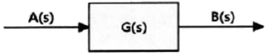
- B(s)=G(s)A(s)
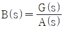
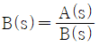
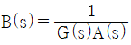
(정답률: 72%)
49. 수면계의 안전관리 사항으로 옳은 것은?
- 수면계의 최상부와 안전저수위가 일치하도록 장착한다.
- 수면계의 점검은 2일에 1회 정도 실시한다.
- 수면계가 파손되면 물 밸브를 신속히 닫는다.
- 보일러는 가동완료 후 이상 유무를 점검한다.
(정답률: 64%)
50. 액체 온도계 중 수은온도계 비하여 알코올 온도계에 대한 설명으로 틀린 것은?
- 저온측정용으로 적합하다.
- 표면장력이 작다.
- 열팽창계수가 작다.
- 액주상승 후 하강시간이 길다.
(정답률: 54%)
51. 흡습염(염화리듐)을 이용하여 습도 측정을 위해 대기 중의 습도를 흡수하면 흡습체 표면에 포화용액 층을 형성하게 되는데, 이 포화용액과 대기와의 증기평형을 이루는 온도를 측정하는 방법은?
- 이슬점법
- 흡습법
- 건구습도계법
- 습구습도계법
(정답률: 69%)
52. 비접촉식 온도계 중 색온도계의 특징에 대한 설명으로 틀린 것은?
- 방사율의 영향이 작다.
- 휴대와 취급이 간편하다.
- 고온측정이 가능하며 기록조절용으로 사용된다.
- 주변 빛의 반사에 영향을 받지 않는다.
(정답률: 63%)
53. 오르자트(Orsat) 분석기에서 CO2의 흡수액은?
- 산성 염화 제1구리 용액
- 알칼리성 염화 제1구리 용액
- 염화암모늄 용액
- 수산화칼륨 용액
(정답률: 72%)
54. 다음 중 구조상 먼지 등을 함유한 액체나 점도가 높은 액체에 적합하여 주로 연소가스의 통풍계로 사용되는 압력계는?
- 다이어프램식
- 밸로우즈식
- 링밸런즈식
- 분동식
(정답률: 66%)
55. 열전대 온도계로 사용되는 금속이 구비하여야 할 조건이 아닌 것은?
- 이력현상이 커야 한다.
- 열기전력이 커야 한다.
- 열적으로 안정해야 한다.
- 재생도가 높고, 가공성이 좋아야 한다.
(정답률: 70%)
56. 보일러 냉각기의 진공도가 700mmHg일 때 절대압은 몇 kg/cm2ㆍa인가?
- 0.02kg/cm2ㆍa
- 0.04kg/cm2ㆍa
- 0.06kg/cm2ㆍa
- 0.08kg/cm2ㆍa
(정답률: 58%)
57. 유체의 흐름 중에 전열선을 넣고 유체의 온도를 높이는데 필요한 에너지를 측정하여 유체의 질량유량을 알 수 있는 것은?
- 토마스식 유량계
- 정전압식 유량계
- 정온도식 유량계
- 마그네틱식 유량계
(정답률: 70%)
58. 최고 약 1600℃정도 까지 측정할 수 있는 열전대는?
- 동-콘스탄탄
- 크로멜-알루멜
- 백금-백금, 로듐
- 철-콘스탄탄
(정답률: 78%)
59. 비접촉식 온도측정 방법 중 가장 정확한 측정을 할 수 있으나 기록, 경보, 자동제어가 불가능한 온도계는?
- 압력식온도계
- 방사온도계
- 열전온도계
- 광고온계
(정답률: 76%)
60. 노내압을 제어하는 데 필요하지 않는 조작은?
- 공기량 조작
- 연료량 조작
- 급수량 조작
- 댐퍼의 조작
(정답률: 66%)
4과목: 열설비재료 및 관계법규
61. 에너지이용 합리화법에 따른 효율관리기자재의 종류로 가장 거리가 먼 것은? (단, 산업통상자원부장관이 그 효율의 향상이 특히 필요하다고 인정하여 고시하는 기자재 및 설비는 제외한다.)
- 전기냉방기
- 전기세탁기
- 조명기기
- 전자레인지
(정답률: 67%)
62. 요의 구조 및 형상에 의한 분류가 아닌 것은?
- 터널요
- 셔틀요
- 횡요
- 승염식요
(정답률: 69%)
63. 에너지이용 합리화법에 따라 인정검사대상기기 조정자의 교육을 이수한 사람의 조종범위는 증기보일러로서 최고사용 압력이 1MPa이하이고 전열면적이 얼마 이하일 때 가능한가?
- 1m2
- 2m2
- 5m2
- 10m2
(정답률: 66%)
64. 에너지이용 합리화법에 따라 에너지다소비 사업자가 그 에너지사용시설이 있는 지역을 관할하는 시ㆍ도지사에게 신고하여야 할 사항에 해당되지 않는 것은?
- 전년도의 분기별 에너지사용량, 제품생산량
- 에너지 사용기자재의 현황
- 사용 에너지원의 종류 및 사용처
- 해당 연도의 분기별 에너지사용예정량, 제품 생산 예정량
(정답률: 53%)
65. 다음 중 구리합금 용해용 도가니로에 사용될 도가니의 재료로 가장 적합한 것은?
- 흑연질
- 점토질
- 구리
- 크롬질
(정답률: 55%)
66. 에너지절약전문기업의 등록이 취소된 에너지 절약전문기업은 원칙적으로 등록 취소일로부터 최소 얼마의 기간이 지나면 다시 등록을 할 수 있는가?
- 1년
- 2년
- 3년
- 5년
(정답률: 72%)
67. 소성가마 내 열의 전열방법으로 가장 거리가 먼 것은?
- 복사
- 전도
- 전이
- 대류
(정답률: 68%)
68. 에너지이용 합리와법에 따라 한국에너지공단이 하는 사업이 아닌 것은?
- 에너지이용 합리화 사업
- 재생에너지 개발사업의 촉진
- 에너지기술의 개발, 도입, 지도 및 보급
- 에너지 자원 확보 사업
(정답률: 59%)
69. 다음 중 열전도율이 낮은 재료에서 높은 재료 순으로 바르게 표기된 것은?
- 물-유리-콘크리트-석고보드-스티로폼-공기
- 공기-스티로폼-석고보트-물-유리-콘크리트
- 스티로폼-유리-공기-석고보드-콘크리트-물
- 유리-스티로폼-물-콘크리트-석고보드-공기
(정답률: 70%)
70. 도염식 가마(down draft kiln)에서 불꽃의 진행방향으로 옳은 것은?
- 불꽃이 올라가서 가마천장에 부딪쳐 가마바닥의 흡입구멍으로 빠진다.
- 불꽃이 처음부터 가마바닥과 나란하게 흘러 굴뚝으로 나간다.
- 불꽃이 연소실에서 위로 올라가 천장에 닿아서 수평으로 흐른다.
- 불꽃의 방향이 일정하지 않으나 대개 가마 밑에서 위로 흘러나간다.
(정답률: 70%)
71. 슬래그(slag)가 잘 생성되기 위한 조건으로 틀린 것은?
- 유가금속의 비중이 낮을 것
- 유가금속의 용해도가 클 것
- 유가금속의 용융점이 낮을 것
- 점성이 낮고 유동성이 좋을 것
(정답률: 50%)
72. 내화물의 구비조건으로 틀린 것은?
- 내마모성이 클 것
- 화학적으로 침식되지 않을 것
- 온도의 급격한 변화에 의해 파손이 적을 것
- 상온 및 사용온도에서 압축강도가 적을 것
(정답률: 65%)
73. 배관재료 중 온도범위 0~100℃ 사이에서 온도변화에 의한 팽창계수가 가장 큰 것은?
- 동
- 주철
- 알루미늄
- 스테인리스강
(정답률: 53%)
74. 에너지이용 합리화법에 따라 검사대상기기 검사 중 개조검사의 적용 대상이 아닌 것은?
- 온수보일러를 증기보일러로 개조하는 경우
- 보일러 섹션의 증감에 의하여 용량을 변경하는 경우
- 동체, 경판, 관판, 관모음 또는 스테이의 변경으로서 산업통상자원부장관이 정하여 고시하느 ㄴ대수리의 경우
- 연료 또는 연소방법을 변경하는 경우
(정답률: 66%)
75. 염기성 내화벽돌에서 공통적으로 일어날 수 있는 현상은?
- 스폴링(spalling)
- 슬래킹(slaking)
- 더스팅(dusting)
- 스웰링(swelling)
(정답률: 56%)
76. 용광로에 장입되는 물질 중 탈황 및 탈산을 위해 첨가하는 것은?
- 철광석
- 망간광석
- 코크스
- 석회석
(정답률: 69%)
77. 에너지이용 합리화법에 따라 시공업의 기술인력 및 검사대상기기 조종자에 대한 교육 과정과 그 기간으로 틀린 것은?(오류 신고가 접수된 문제입니다. 반드시 정답과 해설을 확인하시기 바랍니다.)
- 난방시공업 제1종기술자 과정 : 1일
- 난방시공업 제2종기술자 과정 : 1일
- 소형 보일러, 압력용기조종자 과정 : 1일
- 중, 대형 보일러 조종자 과정 : 2일
(정답률: 79%)
78. 보온면의 방산열량 1100KJ/m2, 나면의 방산열량 1600KJ/m2일 때 보온재의 보온 효율은?
- 25%
- 31%
- 45%
- 69%
(정답률: 50%)
79. 에너지이용 합리화법에 따라 한국에너지공단 이사장 또는 검사기관의 장이 검사를 받는 자에게 그 검사의 종류에 따라 필요한 사항에 대한 조치를 하게 할 수 있는 사항이 아닌 것은?
- 검사수수료의 준비
- 기계적 시험의 준비
- 운전성능 측정의 준비
- 수압시험의 준비
(정답률: 77%)
80. 실리카(silica) 전이특성에 대한 설명으로 옳은 것은?
- 규석(quartz)은 상온에서 가장 안정된 광물이며, 상압에서 573℃이하 온도에서 안정된 형이다.
- 실리카(silica)의 결정형은 규석(quartz), 카올린(kaoline)의 4가지 주형으로 구성된다.
- 결정형이 바뀌는 것을 전이하고 하며 전이속도를 빠르게 작용토록 하는 성분을 광화제라 한다.
- 크리스토발라이트(cristpbalite)에서 용융실리카(fused silica)로 전이에 따른 부피변화 시 20%가 수축한다.
(정답률: 68%)
5과목: 열설비설계
81. 다음 중 pH 조정제가 아닌 것은?
- 수산화나트륨
- 탄닌
- 암모니아
- 인산소다
(정답률: 56%)
82. 흑체로부터의 복사 전열량은 절대온도(T)의 몇 제곱에 비례하는가?
- √2
- 2
- 3
- 4
(정답률: 80%)
83. 원통 보일러의 노통은 주로 어떤 열응력을 받는가?
- 압축 응력
- 인장 응력
- 굽힘 응력
- 전단 응력
(정답률: 67%)
84. 다음 중 보일러수를 pH 10.5~11.5의 약알칼리로 유지되는 주된 이유는?
- 첨가된 염산이 강재를 보호하기 때문에
- 보일러수 중에 적당량의 수산화나트륨을 포함시켜 보일러의 부식 및 스케일 부착을 방지하기 위하여
- 과잉 알카리성이 더 좋으나 약품이 많이 소요되므로 원가를 절약하기 위하여
- 표면에 딱딱한 스케일이 생성되어 부식을 방지하기 때문에
(정답률: 81%)
85. 다음 중 열교환기의 성능이 저하되는 요인은?
- 온도차의 증가
- 유체의 느린 유속
- 항류 방향의 유체 흐름
- 높은 열전율의 재료 사용
(정답률: 65%)
86. 열관류율에 대한 설명으로 옳은 것은?
- 인위적인 장치를 설치하여 강제로 열이 이동되는 현상이다.
- 고온의 물체에서 방출되는 빛이나 열이 전자파의 형태로 저온의 물체에 도달되는 현상이다.
- 고체의 벽을 통하여 고온 유체에서 저온의 유체로 열이 이동되는 현상이다.
- 어떤 물질을 통하지 않는 열의 직접 이동을 말하며 정지된 공기층에 열 이동이 가장 적다.
(정답률: 67%)
87. 다음 그림의 3겹층으로 되어 있는 평면벽의 평균 열전도율은? (단, 열전도율은 λA=1.0kcal/mㆍhㆍ℃, λB=2.0kcal/mㆍhㆍ℃, λc=1.0kcal/mㆍhㆍ℃)
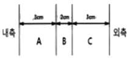
- 0.94cal/mㆍhㆍ℃
- 1.14cal/mㆍhㆍ℃
- 1.24cal/mㆍhㆍ℃
- 2.44cal/mㆍhㆍ℃
(정답률: 53%)
88. 피치가 200mm 이하이고, 골의 깊이가 38mm 이상인 것의 파형 노통의 종류로 가장 적절한 것은?
- 모리슨형
- 브라운형
- 폭스형
- 리즈포지형
(정답률: 64%)
89. 온수방생보일러에서 안전밸브를 설치해야 할 최소 운전 온도 기준은?
- 80℃ 초과
- 100℃ 초과
- 120℃ 초과
- 140℃ 초과
(정답률: 71%)
90. 물을 사용하는 설비에서 부식을 초래하는 인자로 가장 거리가 먼 것은?
- 용존산소
- 용존 탄소가스
- pH
- 실리카(SiO2)
(정답률: 75%)
91. 보일러 형식에 따른 분류 중 원통형보일러에 해당하지 않는 것은?
- 관류보일러
- 노통보일러
- 입형보일러
- 노통연관식보일러
(정답률: 72%)
92. 강판의 두께가 20mm이고, 리벳의 직경이 28.2mm이며, 피치 50.1mm의 1줄 겹치기 리벳조인트가 있다. 이 강판의 효율은?
- 34.7%
- 43.7%
- 53.7%
- 63.7%
(정답률: 55%)
93. 노통보일러 중 원통형의 노통이 2개인 보일러는?
- 라몬트보일러
- 바브콕보일러
- 다우삼보일러
- 랭커셔보일러
(정답률: 77%)
94. 다음 중 열전도율이 가장 낮은 것은?
- 니켈
- 탄소강
- 스케일
- 그을음
(정답률: 72%)
95. 두께 4mm강의 평판에서 고온측 면의 온도가 100℃이고 저온측 면의 온도가 80℃이며 단위면적당 매분 30000KJ의 전열을 한다고 하면 이 강판의 열전도율은?
- 5W/mㆍK
- 100W/mㆍK
- 150W/mㆍK
- 200W/mㆍK
(정답률: 49%)
96. 원통형 보일러의 내면이나 관벽 등 전열면에 스케일이 부착될 때 발생되는 현상이 아닌 것은?
- 열전달률이 매우 작아 열전달 방해
- 보일러의 파열 및 변형
- 물의 순환속도 저하
- 전열면의 과열에 의한 증발량 증가
(정답률: 66%)
97. 외경 76mm, 내경 68mm, 유효길이 4800mm의 수관 96개로 된 수관식 보일러가 있다. 이 보일러의 시간당 증발량은? (단, 수관이외 부분의 전열면적은 무시하며, 전열면적 1m2당의 증발량은 26.9kg/h이다.)
- 2659kg/h
- 2759kg/h
- 2859kg/h
- 2959kg/h
(정답률: 30%)
98. 열정산에 대한 설명으로 틀린 것은?
- 원칙적으로 정격부하 이상에서 정상상태로 적어도 2시간 이상의 운전결과에 따른다.
- 열량량은 원칙적으로 사용 시 연료의 총발열량으로 한다.
- 최대 출열량을 시험할 경우에는 반드시 최대부하에서 시험을 한다.
- 증기의 견도는 98% 이상인 경우에 시험함을 원칙으로 한다.
(정답률: 68%)
99. 3×1.5×0.1인 탄소강판의 열전도계수가 35kcal/mㆍhㆍ℃, 아래 면의 표면온도는 40℃로 단열되고, 위 표면온도는 30℃일 때, 주위 공기 온도를 20℃라 하면 아래 표면에서 위 표면으로 강판을 통한 전열량은? (단, 기타외기온도에 의한 열량은 무시한다.)
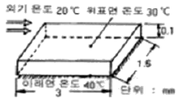
- 12750kcal/h
- 13750kcal/h
- 14750kcal/h
- 15750kcal/h
(정답률: 32%)
100. 고유황인 병커C를 사용하는 보일러의 부대장치 중 공기예열기의 적정온도는?
- 30~50℃
- 6~100℃
- 110~120℃
- 180~350℃
(정답률: 64%)